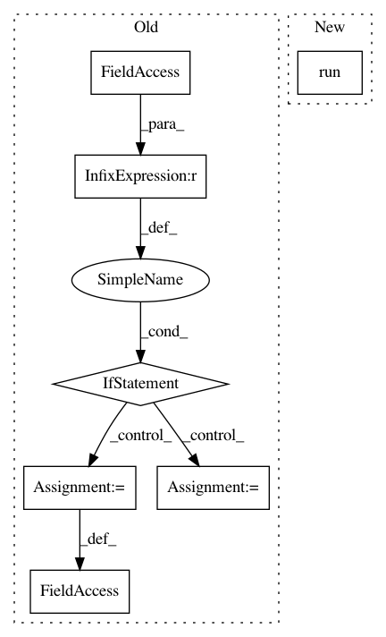

2728afcd57721b34f95ba575507a3db6c86c1f4c,tests/test_model_remote.py,,,#,151
Before Change
self.assertAlmostEqual(trace_length_max, trace_length_max_correct, places=0)
if __name__ == "__main__":
try:
file_path = os.path.dirname(os.path.realpath(__file__))
cpp_model = subprocess.Popen([os.path.join(file_path, "cpproblight/test_gum_marsaglia"), "tcp://*:5555"], preexec_fn=os.setsid)
cpp_model_with_replacement = subprocess.Popen([os.path.join(file_path, "cpproblight/test_gum_marsaglia_replacement"), "tcp://*:5556"], preexec_fn=os.setsid)
unittest.main(verbosity=2)
except KeyboardInterrupt:
print("Stopped")
except Exception:
traceback.print_exc(file=sys.stdout)
os.killpg(os.getpgid(cpp_model.pid), signal.SIGTERM)
os.killpg(os.getpgid(cpp_model_with_replacement.pid), signal.SIGTERM)
After Change
docker_client.containers.run("probprog/cpproblight", "/code/cpproblight/build/cpproblight/test_gum_marsaglia tcp://*:5555", network="host", detach=True)
GaussianWithUnknownMeanMarsagliaCPP = ModelRemote("tcp://127.0.0.1:5555")
docker_client.containers.run("probprog/cpproblight", "/code/cpproblight/build/cpproblight/test_gum_marsaglia_replacement tcp://*:5556", network="host", detach=True)
GaussianWithUnknownMeanMarsagliaWithReplacementCPP = ModelRemote("tcp://127.0.0.1:5556")
class ModelRemoteTestCase(unittest.TestCase):
In pattern: SUPERPATTERN
Frequency: 4
Non-data size: 7
Instances
Project Name: pyprob/pyprob
Commit Name: 2728afcd57721b34f95ba575507a3db6c86c1f4c
Time: 2018-02-21
Author: atilimgunes.baydin@gmail.com
File Name: tests/test_model_remote.py
Class Name:
Method Name:
Project Name: facebookresearch/fastMRI
Commit Name: 05b2b1c02a8ce5f471877243ebebe5df876ccc37
Time: 2020-04-15
Author: tulliemurrell@gmail.com
File Name: models/unet/train_unet.py
Class Name:
Method Name: main
Project Name: HyperGAN/HyperGAN
Commit Name: cb29df4dea83d69ef9f5109398b23158a8c680dc
Time: 2018-09-25
Author: martyn@255bits.com
File Name: examples/next-frame.py
Class Name: VideoFrameSampler
Method Name: _sample
Project Name: tensorflow/transform
Commit Name: 96e4af6e86e93da021c29a4273dcdfaeab8fdfcf
Time: 2017-08-07
Author: tf-transform-dev@google.com
File Name: tensorflow_transform/beam/impl.py
Class Name: _RunMetaGraphDoFn
Method Name: process